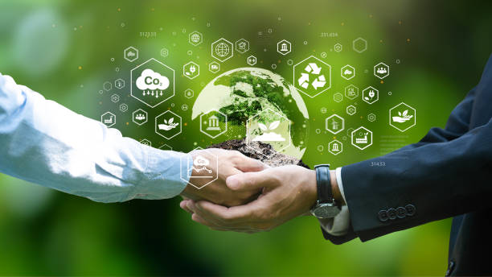

Consejos de Sustentabilidad
Aquí encontrarás consejos para reducir tu huella de carbono y promover la sustentabilidad ambiental en la elaboración de conservas vegetales:

Huella de Carbono
La huella de carbono es una medida que calcula la cantidad total de gases de efecto invernadero, liberados directa o indirectamente debido a las actividades humanas o a la producción de un producto específico.
- Compra local y de temporada: Adquiere frutas y verduras locales y de temporada, ya que requieren menos energía para su producción y transporte.
- Reduce el desperdicio: Utiliza todas las partes comestibles de los alimentos. Por ejemplo, puedes aprovechar cáscaras y tallos en algunas recetas.
- Opta por envases reutilizables: En lugar de usar envases desechables, considera la posibilidad de reutilizar frascos y tapas. Lava y esteriliza adecuadamente antes de usarlos nuevamente.
- Minimiza el uso de agua y energía: Cocina tus alimentos de manera eficiente para reducir el consumo de energía. También utiliza técnicas de conservación adecuadas, como el envasado al vacío.
- Reduce el uso de productos químicos: Utiliza métodos de conservación naturales, como el vinagre o el azúcar, en lugar de conservantes químicos.
Disposición de Desechos
La disposición de desechos se refiere al proceso de gestionar y manejar los residuos sólidos generados por actividades humanas. Esto incluye la recolección, transporte, tratamiento y eliminación final de los desechos de manera segura y ambientalmente responsable.
- Compostaje: La mayoría de los residuos orgánicos de la elaboración de conservas, como cáscaras, tallos y recortes de frutas y verduras, son perfectos para el compostaje. Crea un compost en el jardín o utiliza un contenedor de compost en casa para convertir estos desechos en abono natural. ¿Cómo hacer compost?
- Reciclaje: Los envases de vidrio, tapas de metal y cualquier otro material que sea reciclable deben ser separados y depositados en los contenedores de reciclaje correspondientes. Asegúrate de enjuagar bien los frascos y retirar cualquier etiqueta antes de reciclarlos.
- Reutilización: Siempre que sea posible, reutiliza los frascos de conserva y las tapas para futuros lotes. Lávalos y esterilízalos antes de volver a usarlos.
- Donación: Si has hecho un gran lote de conservas y no puedes consumirlo todo, considera donar algunos frascos a amigos, familiares o a organizaciones locales de alimentos.
- Alimento para animales: Algunos residuos de conservas, como los restos de frutas y verduras, pueden ser utilizados como alimento para animales, siempre que sean seguros y apropiados para su dieta.